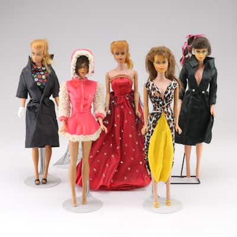

PASSMattel #5 Ponytail in "Easter Parade" Assemble with Other Barbies and Outfits
Lot of 5 vintage Mattel Ponytail Barbie dolls with assorted outfits, one identified by sel
3h left
Current bid$195 · 13 bids
Est. value$300
Your max bid$0
Margin at bid−$127
Details & price history →